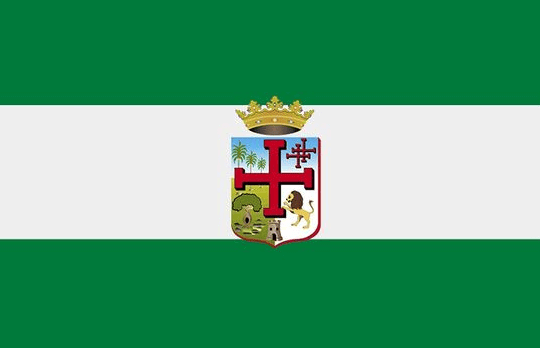
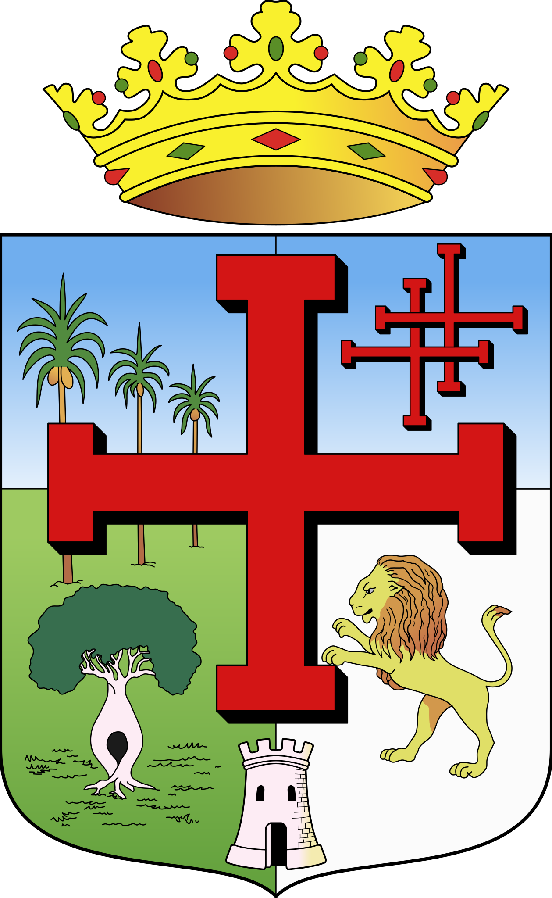

|  | Tradiciones: serenatas, tamborita, cambas alegres. | CORO: La España grandiosa con hado benigno aquí plantó el signo de la Redención. |
| Y su gente noble y trabajadora con esfuerzo hace grande su hogar, honrando siempre su historia y su andar. | De las flores el mundo galano, su ambrosía perfumada ofreciendo ¡Libertad, Libertad! van diciendo en efluvios de paz y de amor. | Gastronomía: majadito, locro, cuñapé, zonzo. |
| Bajo el cielo más puro de América, y en la tierra de Ñuflo de Chávez. ¡Libertad! van trinando las aves, de su veste ostentando el primor. | Sus altos cielos de azul sin igual, el sol de oriente besa al pasar, y en su remaje canta el zorzal. |  |